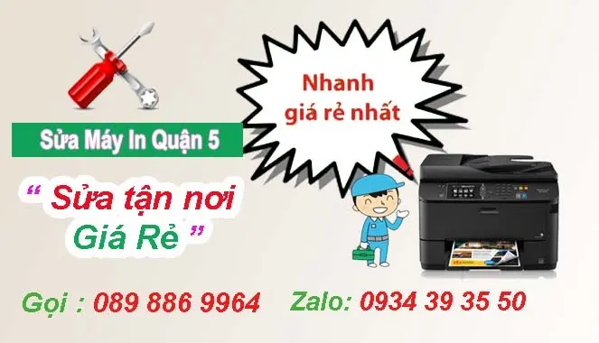

Sửa Máy Tính Quận 5
Công Ty Sửa Máy In Tại Nhà Quận 5
Trung tâm mực in Hi-Tech chuyên sửa máy tính tận nơi quận 5, nạp mực máy in tại nhà, sửa máy tính tái rẻ, Dịch vụ tận nơi nhanh nhất. Điểm kỹ thuật mực in hi-tech nằm tại đường nguyễn trãi quận 5. Hotlite: 089 886 9964 - Zalo: 0934393550
Hi-Tech nhận sửa máy in tại nhà quận 5 tất cả các dòng như: máy in Hp - Canon - Samsung - Brother - Ricoh - Panasoni - Sửa máy in phun màu tận nơi, sửa máy in laser màu các loại
in Học Siêu Việt cung cấp dịch vụ sửa máy tính tại nhà quận 5 giúp đáp ứng mọi nhu cầu của quý khách hàng. Dịch vụ của chúng tôi bao gồm
- Cài đặt hệ điều hành windows, driver, các phần mềm thông dụng Unikey, Winrar, Teamview, Word, Excel, PDF…
- Cài đặt các phần mềm đồ họa photoshop, autocad…
- Sửa chữa máy tính các lỗi cơ bản trong Window.
- Sửa chữa các lỗi liên quan đến ổ cứng.
- Khắc phục tình trạng máy tính chậm, treo, lỗi màn hình, virus…
- Diệt virus, dọn dẹp rác máy tính.
- Vệ sinh, thay keo tản nhiệt làm mát máy tính.
- Các dịch vụ sửa chữa khác theo yêu cầu.
- nâng cấp phần cứng, ráp máy game, sever
- dịch vụ bảo trì máy tính tại cơ quan, tại nhà giá rẻ
- Máy tính không lên nguồn
- Dịch vụ cài driver máy in, máy photocopy, máy tính tại nhà
- Vệ sinh máy tính PC – Laptop – macbook tại nhà nhanh chóng
- thay thế linh kiện máy tính, máy in, macbook chính hãng, uy tín
- Dịch vụ bảo trì máy tính, máy in văn phòng giá rẻ
Ngoài sửa máy tính tại quận 5 chúng tôi còn cung cấp dịch vụ sửa máy tính tại nhà quận 6, chuyên nghiệp, nhanh chóng, với nhiều năm kinh nghiệm trong lĩnh vực sửa máy tính chúng tôi cam kết mang đến cho bạn dịch vụ chất lượng, bảo hành dài hạn, giá cả cạnh tranh nhất. Khi gặp tình trạng hư hỏng các thiết bị văn phòng Hãy liên hệ ngay với tin Học Siêu Việt để được hỗ trợ tốt nhất nhé.

Các lỗi máy in Hi-Tech thường sửa tại quận 5
Nhận sửa máy in bị kẹt giáy
Bảng in bị lem, bị mờ hoặc mất chữ , mất hàng.
Khắc phục sự cố máy in không lên nguồn
Sửa máy in kêu to, in mực bị lem ...
Máy in vô điện chớp đèn không in
Máy in bị cháy nổ mạch điện nghe mùi khét
Máy in để lâu ngày không hoặc động, in bị lem mực ...
Máy in ra giấy bị lệch màu
Sửa máy in bị kẹt giấy ở quận 3
Máy in được một tờ rồi ngưng không in, tắt máy lại in tiếp một tờ rồi ngưng
Sửa lỗi máy in báo đèn đỏ
Khi quý khách hàng cần sửa chữa máy in tại quận 5 có thể liên hệ số hotline: 089 886 9964 hoặc nhắn tin zalo : 0934 393550 kỹ thuật viên sẻ đến ngay
Cam kết sửa máy in ở quận 5
- Sửa chữa máy in tận nơi quận 5 có mặt nhanh nhất chỉ 20 phút
- Sửa máy in tại nhà có bảo hành uy tín
- Dịch vụ sửa máy in quận 5 có làm công nợ cuối tháng với công ty có nhu cầu
- Xuất hóa đơn VAT đầy đủ theo yêu cầu của khách hàng
- Kỹ thuật viên nhiệt tình, năng động luôn túc trực tại quận 5
- Sửa đúng bệnh báo đúng giá
- Thay thế linh kiện máy in - mực in giá cạnh tranh nhất
Tại khu vực quận 5 công ty Hi-Tech làm tất cả các ngày trong tuần kể cả thử 7, chủ nhật và các ngày nghĩ lễ,
Quý khách hàng cần sửa máy in buổi tối ở quận 5 vui lòng liên hệ trước 6 giờ chiều. Kỹ thuật viên Hi-Tech sẻ có mặt đúng giờ.
Ngoài dịch vụ sửa máy in quận 5, Hi-Tech còn nạp mực máy in tại quận 5, sửa máy tính tại nhà ở quận 5 , lắp đặt mạng, tổng đài, camera quan sát.
Xem thêm tại : http://www.tinhocht.com/home/nap-muc-may-in-quan-5
Lỗi cơ bản Máy tính
- Cài đặt Windows, Word, Excel, Fonts, Autocad,...
- Khắc phục và xử lý mọi sự cố máy tính .
- Cứu dự liệu bị mất do xoá nhầm, format, disk, …
- Sửa lỗi máy treo, khởi động lại, máy chạy chậm…
- Diệt Virus, cài đặt phần mềm diệt Virus, cập nhật virus
- Lắp ráp, cài đặt, nâng cấp máy vi tính .
- Cài đặt mạng nội bộ và nhận bảo trì máy…
- Sửa lỗi mất kết nối mạng Internet, mạng Lan, Wifi.
- Chuyên sửa chữa và cài đặt phần mềm cho các loại máy tính PC - Xách tay...
- Nâng cấp, mua bán và trao đổi các loại máy tính cũ mới.
- Lắp ráp cài đặt, khắc phục sự cố phần cứng máy tính PC, máy tính xách tay
- Bảo trì , bảo dưỡng ,lắp đặt, quản trị mạng cho doanh nghiệp vừa và nhỏ - Hỗ trợ kỹ thuật cho người sử dụng máy tính
- Tư vấn và cung cấp thiết bị máy tính.
Lỗi Laptop
- Laptop bật nút Power không lên nguồn.
- Laptop có nguồn nhưng không lên màn hình.
- Máy không nhận thiết gắn ngoài ( LAN ,Sound ,USB ,Cáp USB ... )
- Máy không nhận ổ đĩa , ổ DVD , Wireless , Webcam , bảo mật vân tay , đọc thẻ nhớ ...
Lỗi phức tạp
- Màn hình laptop không hiển thị .
- Màn hình không được sáng , bị sọc , caro .
- Thay thế chip VGA màn hình ,chipset Bắc ,chipset Nam
II. Quy trình sửa máy in - máy tính tại nhà
- 1.Khách hàng gọi tới số Hotline : 089 886 9964 hoặc nhắn tin zalo; 0934 393550 thông báo tình trạng hỏng hóc của máy tính - máy in
- 2.Nhân viên kỹ thuật tại quận 5 sẻ đến nhanh nhất chỉ 20 phút
- 3.Nhân Viên Kỹ Thuật sẽ kiểm tra sự cố hỏng hóc và thông báo với khách hàng cách khắc phục và sửa chữa và báo giá cho quý khách hàng
- 4.Khách hàng thanh toán phí dịch vụ và nhận đầy đủ hóa đơn từ nhân viên kỹ thuật
- Được kỹ thuật viên mực in hitech kiểm tra tận nơi trong 30’, xử lý triệt để các lỗi hư hỏng của máy.
- Quy trình và nguyên tắc làm việc bài bản. Kỹ thuât linh hoạt ở khắp các quận huyện HCM, nhanh chóng hỗ trợ khách hàng mọi lúc mọi nơi.
- Kỹ thuật viên với chuyên môn & nhiều năm thâm niên trong nghề, tự tin sữa chữa tất cá các dòng máy pc, laptop, máy bộ, máy nội địa, gaming….
- Bạn cũng yên tâm về các linh kiện thay thế, chúng tôi nói không với hàng tray, hàng renew, hàng trôi nổi….cam kết linh kiện thay thế chính hãng.
- Thời gian phục vụ tại trung tâm 7/7, bạn có thể đặt lịch sửa chữa bất kể ngày nào trong tuần. Giờ bạn còn chần chừ gì nữa, nhanh tay gọi ngay đến hotline 089 886 9964 để chúng tôi được phục vụ bạn nhanh nhất, không ngại nắng ngại mưa ngại xa ngại khó, giữ chữ tín trong từng lời nói & hành động, nâng cao niềm tin & sự hài lòng cho khách hàng.

SỬA MÁY TÍNH TẬN NƠI TẠI QUẬN 5
Dịch vụ sửa máy tính tận nơi quận 5
– Cài đặt WINDOWS – các phần mềm văn phòng như word, exel, photoshop, corel….
– Diệt virus, cài các phần mềm diệt virus miễn phí hoặc bản quyền theo yêu cầu của quý khách hàng
– Vệ sinh máy tính để bàn và laptop
– Sửa lỗi máy tính vào mạng không được, máy tính không kết nối được internet, wifi…
– Nhận bảo trì máy tính cho cá nhân, công ty, doanh nghiệp.
– Mua bán – Trao đổi máy tính và linh kiện máy tính – hàng chính hãng, có bảo hành.
– Phục hồi dữ liệu máy tính do ghost nhầm, xóa nhầm hoặc hỏng USB, HDD.
– Sửa máy tính không có âm thanh
– Thi công hệ thống mạng LAN, mạng gia đình, mạng doanh nghiệp, lắp wifi, làm cho wifi mạnh hơn, nhanh hơn…
– Nâng cấp máy tính, tư vấn nâng cấp máy tính đạt tốc độ tối đa, hoạt động hết công suất với giá cả phải chăng
2. Bảng giá dịch vụ sửa chữa máy tính tận nơi.
- Cài đặt windows XP, 7, 8, 10 cho PC, Laptop + phần mềm văn phòng đầy đủ : 80.000-120.000đ
- Cài đặt các phần mềm thiết kế đồ họa như : Photoshop, core, 3Dmax, Autocad: 60.000 đ
- Cài Win 7, 8, 10 cho Mac pro, Macbook Air, Imac : 150.000đ
- Cài Mac Os cho Máy Mac pro, Mac Air , Imac : 150.000đ
- Kiểm tra, xử lý lỗi chương trình, vệ sinh máy tính : 80.000-100.000đ
- Cài đặt ứng dụng văn phòng : Microsoft Office 2003, 2007, 2010 ; Font, bộ gõ tiếng việt, xem và chỉnh sửa PDF : 60.000đ
- Cài đặt phần mềm diệt virus (Các phần mềm có bản quyền khách hàng chịu phí) : 50.000đ
- Cài đặt các driver còn thiếu cho máy tính như máy in, máy fax, webcam, micro, Vga… 80.000đ
- Diệt virus, quét virus, cài đặt phần mềm diết virus, sửa lỗi windows (tùy vào mức độ nhiễm virus nặng hay nhẹ) : 80.000-120.000đ
- Phục hồi dữ liệu ổ cứng thẻ nhớ.. do fomat nhầm, xóa nhầm ,ghost nhầm: 1Gb (200.000đ) ,( trên 8Gb trọn gói 1 triệu 500 ngàn)
- Sửa chữa mainboard PC : 180.000-300.000 đ
- Sửa Màn hình : 250.000-300.000 đ
Chi nhánh sửa máy in khác ngoài quận 5
- Sửa máy in ở quận 1
- Sửa máy in tại nhà quận 3
- Sửa máy in quận 5
- Sửa máy tính quận 6
- Sửa máy in tại quận 10
- Sửa máy tính quận 11
- Sửa máy tính quận tân bình
- Sửa máy tính quận tân phú
Sửa máy in
- Sửa máy in quận 1
- Sửa máy in tại quận 3
- Sửa máy in tại quận 5
- Sửa máy in tại quận 6
- Sửa máy in tại quận 10
- Sửa máy in quận 11
- Sửa máy in ở quận tân bình
- Sửa máy in quận tân phú
- Sửa máy in quận phú nhuận
Nạp mực máy in
- Thay mực máy in quận 1
- Thay mực in quận 3
- Thay mực máy in quận 5
- Thay mực máy in quận 6
- Bơm mực in quận 10
- nạp mực in quận 11
- Thay mực in tân bình
- Bom mực máy in tân phú
- Nạp mực in quận phú nhuận
Sửa máy tính
- Sửa máy tính quận 1
- Sửa máy tính ở quận 3
- Sửa máy tính quận 5
- Cửa hàng sửa máy tính quận 6
- Công ty sửa máy tính quận 10
- Địa chỉ sửa máy tính quận 11
- Nơi sửa máy tính quận tân bình
- Sửa máy tính quận tân phú
- Sửa chữa máy tính quận Bình Thạnh
Sửa máy in
- Sửa máy in quận 1
- Sửa máy in tại quận 3
- Sửa máy in tại quận 5
- Sửa máy in tại quận 6
- Sửa máy in tại quận 10
- Sửa máy in quận 11
- Sửa máy in ở quận tân bình
- Sửa máy in quận tân phú
- Sửa máy in quận phú nhuận
Nạp mực máy in
- Thay mực máy in quận 1
- Thay mực in quận 3
- Thay mực máy in quận 5
- Thay mực máy in quận 6
- Bơm mực in quận 10
- nạp mực in quận 11
- Thay mực in tân bình
- Bom mực máy in tân phú
- Nạp mực in quận phú nhuận